Ingreso de solicitudes nuevo débito |
Mediante esta opción se ingresan en el sistema las solicitudes de nuevo débito.
Al ingresar a la opción se despliega un formulario inicial en el cual se solicita al usuario digitar los datos de identificación del cliente para quien se desea ingresar la solicitud.
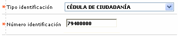
Descripción de campos
Tipo identificación |
Campo tipo combo en el cual se puede seleccionar el tipo de documento de identificación asociado con el cliente a quien se desea ingresar la solicitud. |
Número identificación |
En este campo alfanumérico de hasta 16 caracteres, obligatorio, se registra el número de identificación del cliente. |
Una vez ingresada la información se despliega un nuevo formulario que contiene la información de todas las solicitudes de nuevo débito que tenga el cliente. Si no existen solicitudes a mostrar el formulario se despliega en blanco.
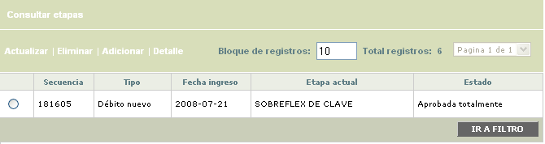
El formulario contiene el hipervínculo Consultar etapas, que permite ver el histórico de las etapas por las que ha pasado la solicitud. Adicionalmente contiene las opciones Actualizar, Eliminar, Adicionar y Detalle.
Adicionar: si el usuario invoca la opción Adicionar, se despliega un nuevo formulario con un único campo que contiene una lista de valores en donde se selecciona el producto débito solicitado por el cliente.
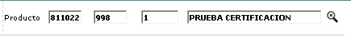
Una vez hechas las validaciones respectivas, el sistema despliega un wizard de dos pasos en el que se registran los datos requeridos para el ingreso de la solicitud.
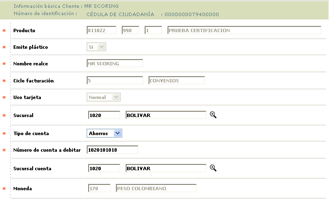
Descripción de campos
Bin / Producto |
Campo de salida que muestra el bin, producto, grupo de afinidad y descripción del producto débito solicitado por el cliente. |
Emite plástico |
Este campo es solo de salida y muestra por defecto la opcion siempre en Si. |
Nombre realce |
Campo de salida que despliega el nombre del cliente y que va a ser impreso o realzado en la tarjeta. |
Ciclo de facturación |
En este campo de salida se muestra el ciclo de facturación al que pertenece la tarjeta y que será la base para determinar las fechas para el cobro de los costos generados por cuota de manejo. |
Uso tarjeta |
Este campo toma el valor 'Normal' para señalar que la tarjeta no tiene restricciones para su uso. |
Sucursal |
En este campo obligatorio y que contiene lista de valores, se selecciona la sucursal de radicación de la tarjeta débito. |
Tipo de cuenta |
Campo obligatorio tipo combo en el que se selecciona entre Ahorros, Corriente o Rotativo el tipo de cuenta asociado a la tarjeta débito. |
Número de cuenta a debitar |
En este campo obligatorio se registra el número de cuenta asociado con la tarjeta débito. |
Sucursal cuenta |
Campo en el que se digita el código de la sucursal a la que pertenece la cuenta a asociar con la tarjeta. |
Moneda |
En este campo obligatorio con lista de valores, se selecciona la moneda en la cual se encuentra denominada la cuenta asociada con la tarjeta débito. |
En la segunda página del wizard, se despliegan los diferentes documentos requeridos durante el ingreso de la solicitud y el usuario puede marcar para cada tipo de persona si el documento fue entregado o no.
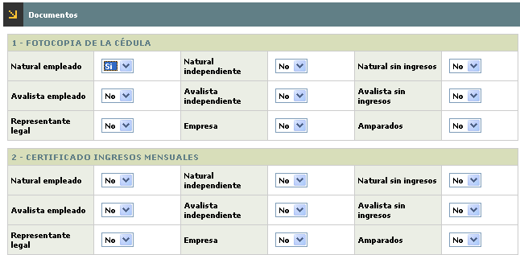
Actualizar: si el usuario selecciona un registro e invoca la opción Actualizar, se invoca un nuevo formulario en el cual los únicos campos modificables son Sucursal, Tipo cuenta, Número cuenta y Sucursal cuenta.
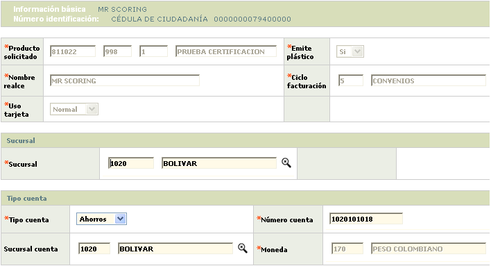
En la página de documentos, el usuario puede modificar para cada documento y para cada tipo de persona la indicación de Si o No el documento fue entregado.
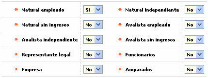
Detalle: si el usuario selecciona un registro e invoca la opción Detalle, se despliega un wizard de dos pasos con la información completa de la solicitud y en el cual ninguno de sus campos es modificable.
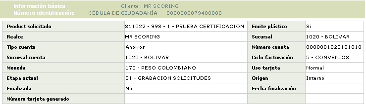
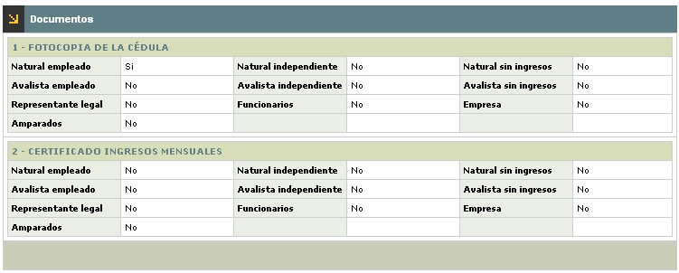
Consultar etapas : si el usuario selecciona una solicitud e invoca el hipervínculo Consultar etapas, se despliega un nuevo formulario que le permite ver el detalle de las diferentes etapas por las cuales ha avanzado la solicitud y el resultado obtenido en cada una de ellas.
El formulario contiene el hipervínculo Documentos requeridos que al ser invocado despliega otro formulario que le permite ver al usuario cuales son los documentos que de acuerdo con lo parametrizados para el tipo de solicitud y producto son requeridos en cada una de las etapas.
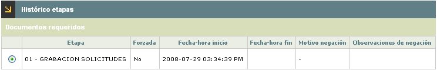
Descripción de campos
Etapa |
Campo que muestra el código y descripción de cada una de las etapas por las cuales ha avanzado la solicitud. |
Forzada |
En este campo se indica si el avance de la solicitud en cada etapa fue resultado del proceso normal o si por el contrario la solicitud se avanzó de manera forzada pasando por alto las validaciones propias de la etapa. |
Fecha hora inicio |
Campo que despliega la fecha y hora en la cual la solicitud arribó a cada una de las etapas. |
Fecha hora fin |
En este campo se muestra la fecha en la cual la solicitud fue avanzada a una etapa siguiente o terminó su trámite en cada una de las etapas. |
Motivo negación |
Si durante el avance de la solicitud en la etapa debido a las validaciones propias de la misma o a los filtros exitentes la solicitud fue negada, en este campo se muestra el motivo que justifica dicha negación. |
Fecha hora fin |
En este campo se muestran los comentarios u observaciones adiconales que complementan la explicación del motivo por el cual fue negada la solicitud. |
Documentos requeridos: si desde el histórico de etapas el usuario selecciona un registro e invoca el hipervínculo Documentos requeridos, se despliega un formulario en el que se relacionan los documentos que de acuerdo con los parámetros de solicitud por producto son requeridos en la etapa y así mismo se indica para cada documento si este fue o no entregado por el cliente.
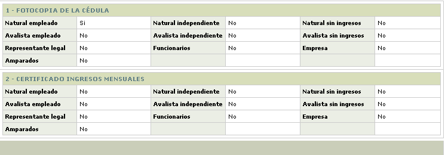